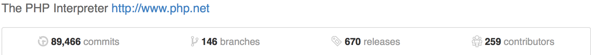
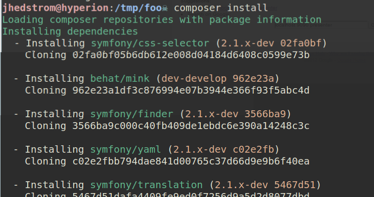

Your perfect tool
Presented by Milan Popović / @komita1981
Me
PHP developer
7 years in PHP development
Work for 12 Mnkys
I like to learn and share knowledge
Active member of PHP Srbija
You?
Who are you?
What's your experience in programming?
What do you think about PHP?
“There are only two kinds of programming languages: those people always bitch about and those nobody uses.”
Bjarne Stroustrup
History of PHP
Created in 1994 by Rasmus Lerdorf - @rasmus
Written in C
Personal Home Page Tools
ZEND - Andi Gutmans and Zeev Suraski
PHP - Hypertext Preprocessor
Timeline
- PHP 1 - 1995
- PHP 2 - 1996
- PHP 3 - 1998 - popularity gained
- PHP 4 - 2000 - wannabe object
- PHP 5 - 2004 - OO support
- PHP 5.3 - 2009 - Namespaces
- PHP 5.4 - 2012 - Traits, []
- PHP 5.5 - 2013 - OPcache, Finally
- PHP 5.6 - 2014 - Constant Scalar Expressions
- PHP 7 - October 2015
May 2014 - PHP github repo

April 2015 - PHP github repo

Why you should choose PHP?
Hosting
Shared
VPS
Dedicated servers
Heroku
Google App Engine
Azure
Popularity - TIOBE index
 Popularity - usage of languages on web
Popularity - usage of languages on web
Community
More than 5 millions PHP developers worldwide
Up to thousand PHP developers in Serbia
Activity

Simplicity - Highly learnable
The easiest language to learn for non-technical people
Fast and reliable
Platform independent
Bunch of good tools
Bunch of extensions
Good (and extensive) documentation
Big players involved (FB...)
Open source
Lets you get things done
Prejudice
<?php echo $item['title'];?>
“All the PHP code I’ve seen in that experience has been messy, unmaintainable crap. Spaghetti SQL wrapped in spaghetti PHP wrapped in spaghetti HTML, replicated in slightly-varying form in dozens of places”Tim Bray
namespace League\Flysystem;
use LogicException;
use InvalidArgumentException;
class Filesystem implements FilesystemInterface
{
// variable declaration hidden in this example
/**
* Constructor
*
* @param AdapterInterface $adapter
* @param mixed $config
*/
public function __construct(AdapterInterface $adapter, $config = null)
{
$this->adapter = $adapter;
$this->config = Util::ensureConfig($config);
}
/**
* {@inheritdoc}
*/
public function write($path, $contents, array $config = [])
{
$path = Util::normalizePath($path);
$this->assertAbsent($path);
$config = $this->prepareConfig($config);
return (bool) $this->adapter->write($path, $contents, $config);
}
Education
PHP the right way
Laracast

Books
Conferences
FORGET w3schools.com
Why?
PHP FIG
PHP Framework Interop Group

PSR
Php Standard Recommendation
Autoloading standard - PSR-0
Basic coding standard - PSR-1
Coding style guide - PSR-2
Logger interface - PSR-3
Improved autoloading - PSR-4
PHPDoc - PSR-5
Cache interface - PSR-6
HTTP message implementation - PSR-7
Composer

Dependency Manager for PHP
Created by Jordi Boggiano and Nils Adermann
Thank you guys!
“PHP has a better dependency manager than any other languages”Fabien Potencier
curl -sS https://getcomposer.org/installer | php
Can be installed globally and locally
The problem that Composer solves is this:
- You have a project that depends on a number of libraries
- Some of those libraries depend on other libraries
- You declare the things you depend on
- Composer finds out which versions of which packages need to be installed, and installs them (meaning it downloads them into your project)
Declaring dependencies
composer.json
{
"name": "zendframework/skeleton-application",
"description": "Skeleton Application for ZF2",
"license": "BSD-3-Clause",
"keywords": [
"framework",
"zf2"
],
"homepage": "http://framework.zend.com/",
"require": {
"php": ">=5.3.3",
"zendframework/zendframework": "2.2.*",
"aws/aws-sdk-php-zf2": "1.2.1",
"league/flysystem": "0.4.*@dev"
}
}

Semantic versioning
more info - http://semver.org/
Version constraints
Exact match
1.0.0, dev-master
Wildcard range
1.0.*, 2.*
Hyphen range
1.0 - 2.0 === >=1.0.0 < 2.1
1.0.0 - 2.1.0 === >=1.0.0 <= 2.1.0
Unbounded range
>= 1.0
DO NOT USE THIS
Next Significant Release
~1.2 === >=1.2.0 <2.0.0
~1.2.3 === >=1.2.3 <1.3.0
Caret / Semver Operator
^1.2.3 === >=1.2.3 <2.0.0
^ 0.3 === >=0.3.0 <0.4.0
Libraries should use ^ and you should too!
The Lock File
composer.lock
Provide fast installs with low memory usage
Reproducible installs
Do you add it to .gitignore?
Commit it and use it with composer install
DO NOT DEPLOY IT
Autoloading
You don’t have to maintain your own autoloader
Ability to load your code automatically
include "vendor/autoload.php";
"autoload": {
"psr-0" : {
"Application": "src/"
}
}
"autoload": {
"psr-4" : {
"Application\\": "src/"
}
}
"autoload": {
"classmap" : [
"src/"
]
}
$baseDir . '/src/Application/Controller/Dashboard.php',
'Application\\Controller\\Defaults' => $baseDir . '/src/Application/Controller/Defaults.php',
'Application\\Controller\\Entry' => $baseDir . '/src/Application/Controller/Entry.php',
'Application\\Controller\\Logbook' => $baseDir . '/src/Application/Controller/Logbook.php',
'Application\\Controller\\RequiresAuth' => $baseDir . '/src/Application/Controller/RequiresAuth.php',
'Application\\Controller\\User' => $baseDir . '/src/Application/Controller/User.php',
'Application\\Model\\LogEntry\\Defaults' => $baseDir . '/src/Application/Model/LogEntry/Defaults.php',
'Application\\Model\\LogEntry\\Gateway' => $baseDir . '/src/Application/Model/LogEntry/Gateway.php',
'Application\\Model\\LogEntry\\HourReports' => $baseDir . '/src/Application/Model/LogEntry/HourReports.php',
'Application\\Model\\LogEntry\\LogEntry' => $baseDir . '/src/Application/Model/LogEntry/LogEntry.php',
'Application\\Model\\LogEntry\\LogEntryCollection' => $baseDir . '/src/Application/Model/LogEntry/LogEntryCollection.php',
'Application\\Model\\LogEntry\\Storage' => $baseDir . '/src/Application/Model/LogEntry/Storage.php',
'Application\\Model\\User\\Gateway' => $baseDir . '/src/Application/Model/User/Gateway.php',
'Application\\Model\\User\\Storage' => $baseDir . '/src/Application/Model/User/Storage.php',
'Application\\Model\\User\\User' => $baseDir . '/src/Application/Model/User/User.php',
/ ...
);
{
"require": {
"vendor/package": "1.3.2",
"vendor/package2": "1.*",
"vendor/package3": ">=2.0.3"
}
}
Packagist statistics - may 2014
- 29 908 packages registered
- 110 247 versions available
- 207 357 630 packages installed (since 2012-04-13)
Packagist statistics - april 2015
- 56 164 packages registered
- 246 789 versions available
- 687 988 359 packages installed (since 2012-04-13)

Before you choose package
Check if it is properly tested
Check documentation (README.md)
Check Stability
dev -> alpha -> beta -> RC -> stable
Check number of downloads
Check when it was last authored
Best framework

- Zend Framework 2
- Symfony 2
- Laravel 4, 5
- Yii 2
- CakePHP 3
- Aura
- PhalconPhp
- Slim
- Silex
- Lumen
Take care about this
- What do you want to build?
- Is good documentation available?
- Is it worth the investment?
- Community
- Comparing with other FW
- Security
Laravel
The Swiss-Knife of Startup world
The Most Popular Framework of 2015
Symfony 2
“If you have a PHP problem the Symfony community has already solved it”
PHP is not for
Building command line apps
Doing heavy calculation
Calculate statistics
You need all the performance you can get